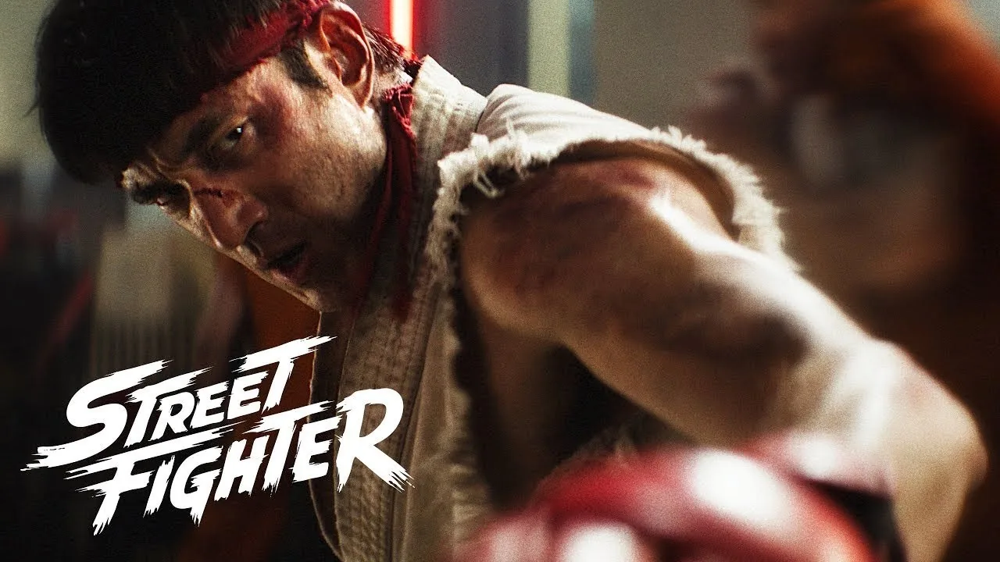
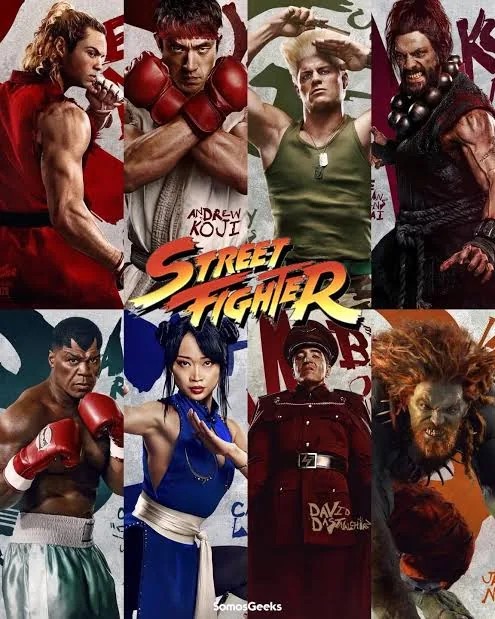
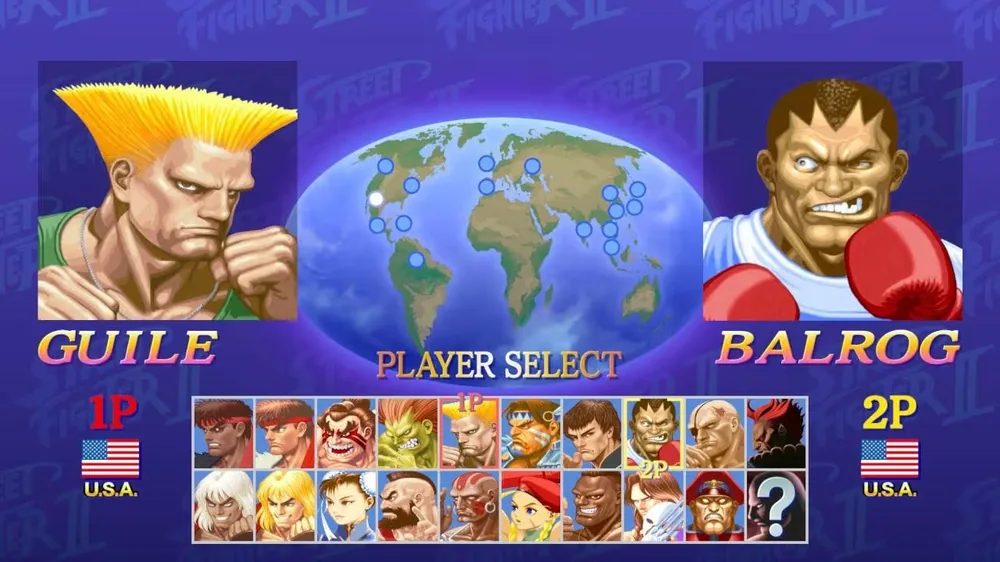
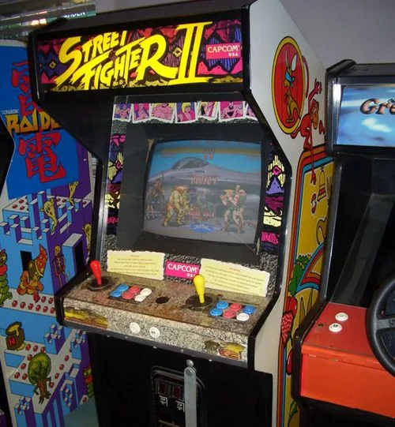
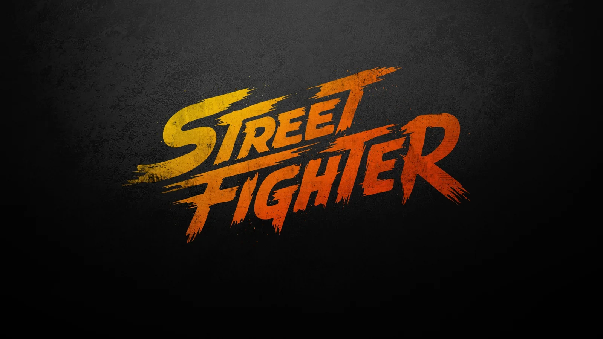
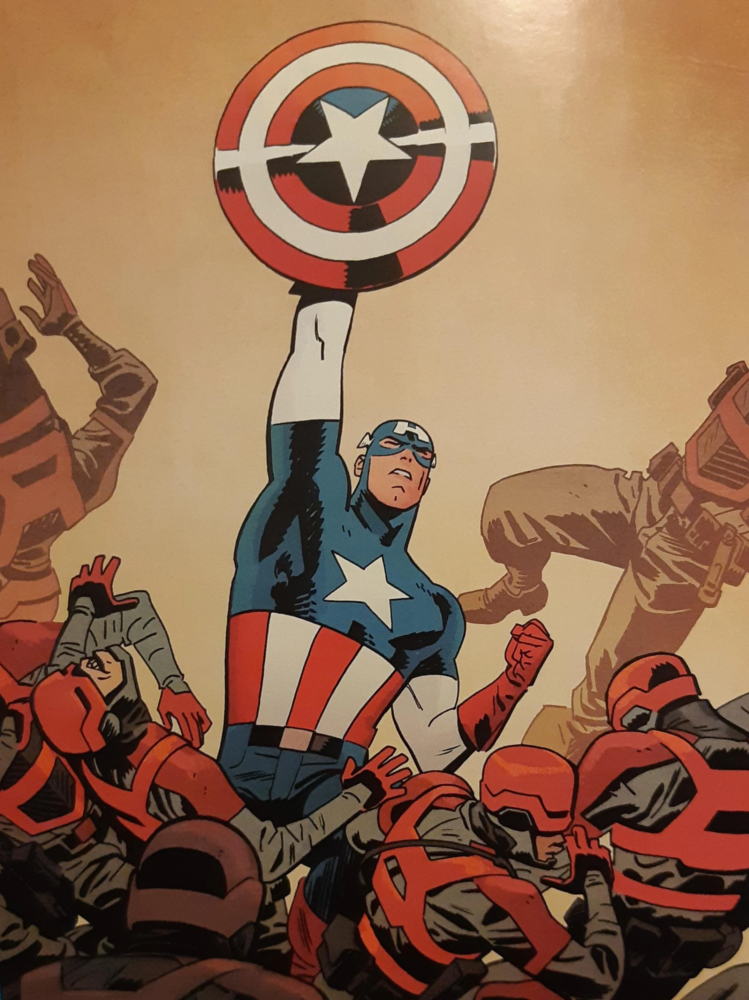
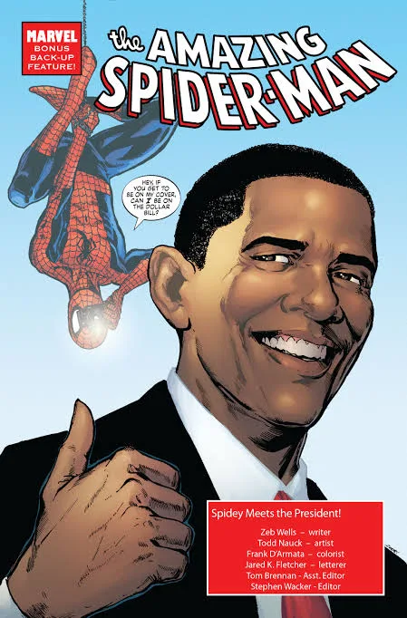
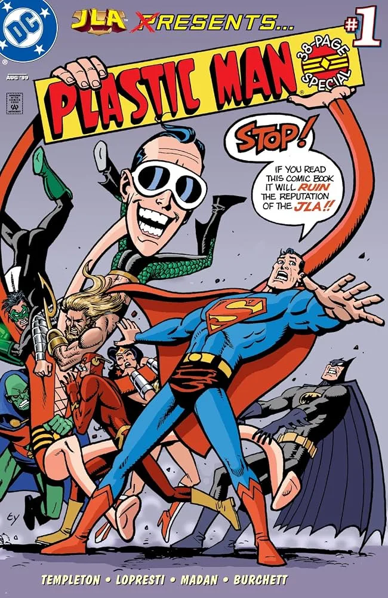

STREET FIGHTER: GANANDO EL PRIMER COMBATE
POR MUY POCA VENTAJA

Bien sabemos que cuando se anuncia la adaptación de un videojuego al cine, las expectativas suelen ser muy bajas. Esto es especialmente cierto si ya existieron dos intentos fallidos en acción real en los que a los directores les importó poco conocer el material de origen. Por eso, con esta nueva entrega, era lógico pensar que podría pasar lo mismo. Sin embargo, la cinta dirigida por Kitao Sakurai toma una ruta distinta: abraza por completo la estética de los noventas, empapada de neón, luces barrocas y la genial absurdez de los salones de arcade de la época.
Tampoco es que debamos esperar una película perfecta, pero algo es seguro: esta cinta cumple con creces para quienes amamos la franquicia. Es un homenaje directo para aquellos que crecimos en las «retas» de las farmacias o papelerías, comprando fichas y esperando el turno para derrotar al rival; para quienes teníamos un peleador favorito con el que nos volvíamos imbatibles, e incluso para quienes imitábamos los golpes especiales sin tener idea de lo que significaban las frases de los personajes. Capcom tardó mucho tiempo en darnos algo digno, donde al menos el fan service está presente en casi todo el metraje.

🟢 Los golpes certeros (Lo bueno)
El inicio es brutal y justifica por sí solo quedarse a ver toda la cinta. La icónica pelea de Ryu contra Sagat, emulando aquel juego de 1987 a través de secuencias de animación estilizadas a modo de flashbacks, es una genialidad visual que eriza la piel de cualquier veterano. De ahí, la historia da un salto en el tiempo hacia la época del segundo torneo.
La premisa respeta al videojuego que conocemos: Ryu teme sucumbir al Satsui no Hado —la fuerza malvada que lleva dentro—, mientras M. Bison (David Dastmalchian) busca aumentar su poder organizando el torneo World Warrior. El diseño de vestuario y los efectos prácticos son muy disfrutables. Aunque los combates son contados para un largometraje que vive de las peleas, las coreografías están muy bien logradas, destacando los enfrentamientos de E. Honda contra Ryu, Ryu contra Ken, y la intensa batalla entre Chun-Li y Cammy. Las constantes guiñas al espectador —como ver a Jason Momoa como Blanka o el guiño a la mítica fase de destruir el automóvil— demuestran que el director entiende el universo del juego y no se avergüenza de él.

🎵 El combo perfecto: La banda sonora
Si hay algo que termina por ganarse el corazón del fan, es el apartado sonoro. La banda sonora es una auténtica joya de la nostalgia, un viaje directo a la era de los 16 bits pero con la potencia de una producción moderna. La música no solo acompaña, sino que eleva cada escena al integrar las melodías clásicas del juego —como los icónicos temas de Ryu, Ken y, por supuesto, el inolvidable tema de Guile— reinventadas con guitarras eléctricas y sintetizadores pesados. Escuchar esos acordes mientras se ejecuta un Hadouken en pantalla grande es el combustible perfecto para activar la memoria emotiva de cualquiera que haya gastado sus domingos en las maquinitas.

🎧 Lista oficial de canciones (OST) destacadas
- FIGHT! — El tema principal que abre la acción.
- Ryu: Lost Champion — Una versión imponente y melancólica del clásico tema de Ryu.
- Guile's Theme — Revisitado con guitarras eléctricas y sintetizadores (y sí, como dice el meme, queda bien con todo).
- Chun-Li: Woman of Vengeance — Arreglos tradicionales con ritmos de acción modernos.
- M. Bison — El tema oscuro y amenazante para el líder de Shadaloo.
- Honda's Wager — La música rítmica y pesada del combate de E. Honda.
- KEN VS RYU — La pieza central y más emotiva, el choque de los hermanos adoptivos.
- Akuma's Arrival — Una composición brutal que anuncia al portador del Satsui no Hado.
- Hadoken! — El clímax musical diseñado para los golpes especiales.
- The Fight Continues! — El electrizante tema de los créditos finales.
🎧 Escúchala completa: Street Fighter (Original Motion Picture Soundtrack) en Apple Music
🔴 Los puntos débiles (Donde falla)
Donde la película tropieza es en la sala de edición. El montaje es demasiado caótico y apresurado; en su empeño por trocear las escenas para darle dinamismo a la acción, termina quitándole el aire a los personajes y restándole peso a los propios combates. Además, con una lista de personajes tan gigantesca, el guion sufre para armar el rompecabezas. Se siente el enorme potencial dramático en la rivalidad y la reconciliación entre Ryu (Andrew Koji) y Ken (Noah Centineo), pero la historia apresura su conflicto emocional en favor de chistes absurdos que rompen el tono de seriedad que la trama intenta construir.
Por momentos, el humor está tan exagerado que la experiencia se desvía hacia una comedia bizarra, con decisiones de guion cuestionables —como una Cammy extrañamente similar a Harley Quinn o un Bison que roza la caricatura exagerada—. En lugar de elevar el material que parodia, la cinta a veces prefiere reírse de sí misma y de lo «cringe» de los noventas, estancándose en la nostalgia en lugar de proponer una narrativa cinematográfica sólida.
🎬 Escena post-créditos: el nacimiento de Shadaloo
Todo indica que se vendrá una secuela, pues existe una escena post-créditos. En una secuencia perfectamente animada, el grupo de los villanos se acerca al único luchador de Street Fighter II que hasta ese momento había hecho solo un pequeño cameo al inicio: Sagat. Tras ser humillado por Ryu en su combate anterior, la inclusión del villano en el grupo plantea el nacimiento de los Cuatro Reyes de Shadaloo.

EL VEREDICTO FINAL
Al final, no estamos ante la peor película de la historia, pero sí ante una agridulce. Para la comunidad de los juegos de pelea y los fans acérrimos, ver los Hadoukens y los ataques Psycho Crusher en la pantalla grande con este nivel de fidelidad visual es una victoria absoluta. Sin embargo, como pieza de cine, queda la frustración de saber que la gran película definitiva de Street Fighter estuvo muy cerca, pero se nos volvió a escapar de las manos por culpa de un guion atiborrado y una edición que no la dejó respirar.
OTROS RUIDOS

Por qué el Capitán América es la peor pesadilla de los nacionalistas
Steve Rogers no es un símbolo de obediencia; es una carta de protesta.

Los héroes de cómic más políticos de la historia
Izquierda, antifascismo y derechos humanos en las viñetas.

Plastic Man: El héroe más ridículo y peligroso
El personaje más roto de los cómics que nadie toma en serio.